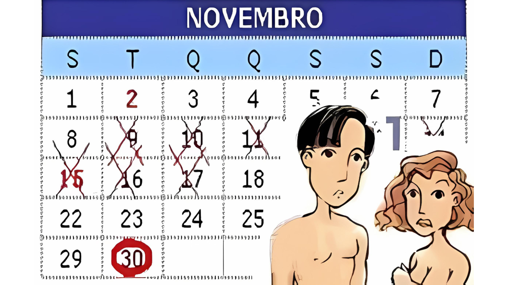

<!DOCTYPE html>
<html lang="pt-br"></html>
<head>
    <meta charset="UTF-8">
    <meta http-equiv="X-UA-Compatible" content="IE=edge">
    <meta name="viewport" content="width=device-width, initial-scale=1.0">
    <link rel="stylesheet" href="style.css">
    <!--box icons-->
    <link href='https://unpkg.com/boxicons@2.1.4/css/boxicons.min.css' rel='stylesheet'>
    <title>Página de Post</title>

</head>
<body>
    <!--Cabeçalho-->
    <header>
        <!--Navegação-->
        <div class="nav container">
        <!--Logo-->
        <a href="index.html" class="logo">Loucos por <span>pontos</span></a>
        <!--Botão de Login-->
        <a href="index.html" class="login">Início</a>
        </div>
    </header>

    <!--Conteúdo do Post-->
    <section class="post-cabecalho">
        <div class="conteudo-cabecalho post-container">
            <!--Voltar Para a Home-->
            <a href="index.html" class="voltar-home">Voltar para a Home</a>
            <!--Título-->
            <h1 class="cabecalho-titulo">Calendário (tabelinha)</h1>
            <!--Imagem do Post-->
            
        </div>
    </section>

    <!--Posts-->
    <section class="post-conteudo post-container">
        <h2 class="sub-titulo">Entenda a "tabelinha"</h2>
        <p class="post-texto">A tabelinha é um método que se baseia no cálculo dos dias em que provavelmente estará mais apta a engravidar, caso tenha relações sexuais desprotegidas. Assim, pode ser utilizada tanto para este fim quanto para a contracepção.</p>
        <p class="post-texto">A mulher geralmente está fértil no meio do ciclo menstrual, quando ocorre a ovulação. Para saber, com precisão, se seu ciclo é regulado e de quantos dias ele é; o ideal é anotar, durante seis meses, o dia do início de cada menstruação. Ao final, você deve contar o intervalo de dias entre o início de duas menstruações consecutivas. Estes correspondem ao seu ciclo menstrual.</p>
        <p class="post-texto">Como a grande maioria dos ciclos variam entre 28 e 31 dias, do 14º ao 16º dia são os dias mais férteis. Assim, para evitar a gravidez, você e seu parceiro não devem ter relações sexuais nestes dias.</p>
    </section>

    <!--Compartilhamento-->
    <div class="compartilhar post-container">
        <span class="compartilhar-titulo">Compartilhe esse artigo</span>
        <div class="social">
            <a href="https://www.instagram.com/infoweb_2022/" target=”_blank”><i class='bx bxl-instagram'></i></a>
            <a href="https://www.facebook.com/?locale=pt_BR" target=”_blank”><i class='bx bxl-facebook'></i></a>
        </div>
    </div>

    <section class="post-container">
        <p class="post-texto">Veja outros conteúdos sobre <a href="barreira.html">métodos de barreira, </a><a href="cirurgico.html">métodos cirurgico, <a href="hormonais.html">métodos hormonais</a> e </a><a href="comportamental.html">métodos comportamentais.</a></p>
    </section>
    
    <!--Rodapé-->
    <div class="rodape container">
        <p>Copyright &#169 2024.</p>
        <div class="social">
            <a href="https://www.instagram.com/infoweb_2022/" target=”_blank”><i class='bx bxl-instagram'></i></a>
            <a href="https://www.facebook.com/?locale=pt_BR" target=”_blank”><i class='bx bxl-facebook'></i></a>
        </div>
    </div>

    <!--JQuary Link-->
    <script
  src="https://code.jquery.com/jquery-3.7.1.js"
  integrity="sha256-eKhayi8LEQwp4NKxN+CfCh+3qOVUtJn3QNZ0TciWLP4="
  crossorigin="anonymous"></script>
    <!--Link do JavaScript-->
    <script src="main.js">
    </script>
</body>
</html>